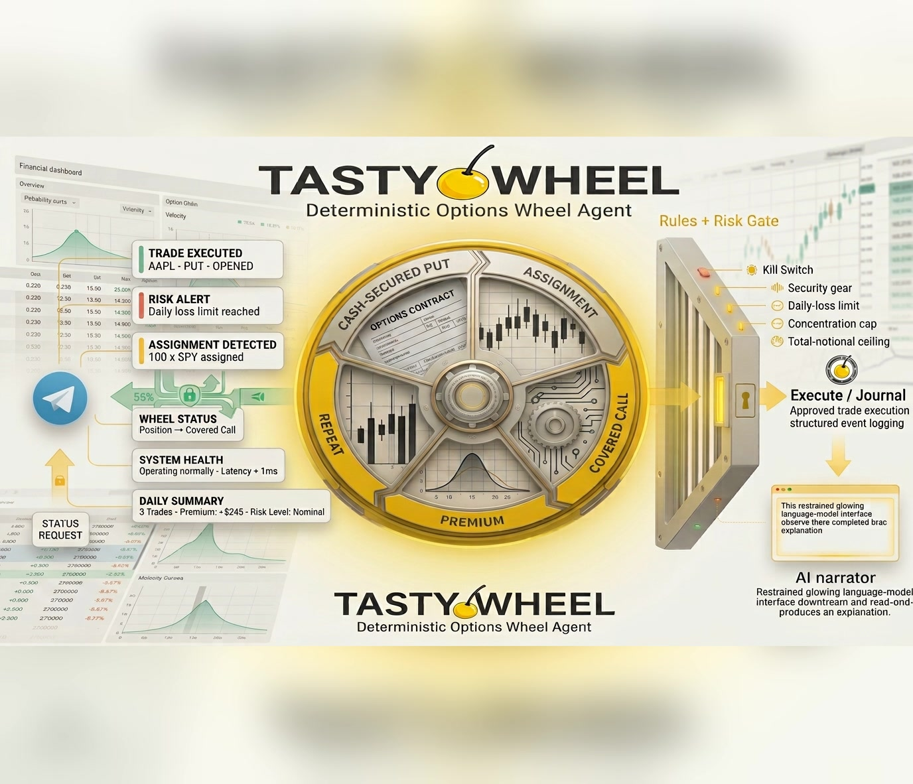

Hackathon video coverAgentic Trading
An options-trading agent built for the Alpaca AI trading-agents hackathon, combining my interest in options trading with Alpaca’s tools for agentic trading.
- Screens symbols and sizes every trade with deterministic rules
- Sends every order through a risk gate: kill switch, daily loss limit, caps per stock and in total
- Journals every trade, and AI explains the day’s decisions in plain English
- Reports each run and the daily review on Telegram
Paper trading only.
PythonAlpaca CLISQLitepytestTelegram